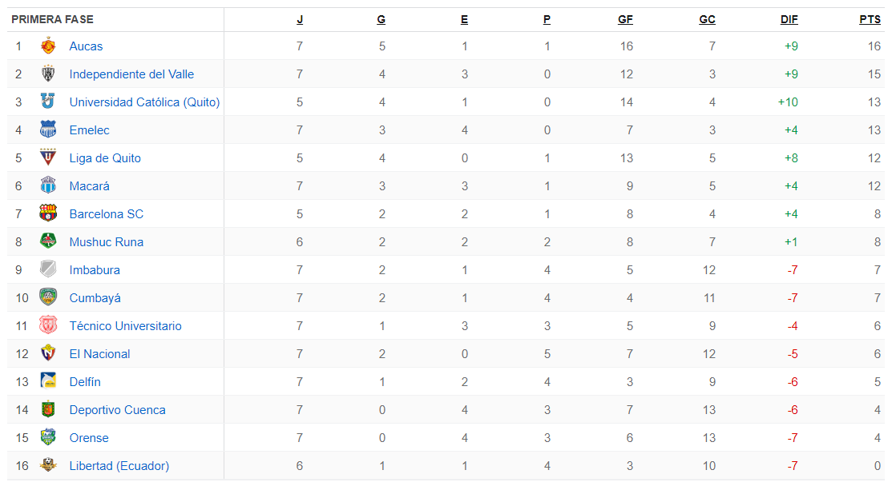

INICIO
CALENDARIO
TABLA DE POSICIONES 2024 LIGAPRO
¿Cómo se define al campeón?
El equipo que campeone la Primera Ronda, se enfrentará al club que logre más puntos en la Segunda. Estos dos se enfrentan en cotejos de ida y vuelta, y el que gane en el global, será el flamante campeón del certamen.
